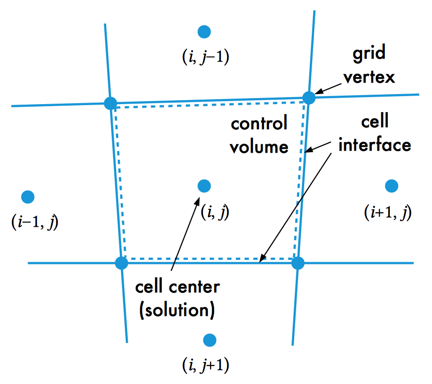

ANSYS Fluent CFD, like most CFD programs, is based on the finite volume method. The finite volume method is a generalization of the finite difference method to unstructured meshes. Unlike the finite element method, FVM yields values across the entire volume contained within a cell: this has a particular advantage in preserving the flux of state variables across intercellular surfaces.
We are interested, in CFD, in solving the Navier–Stokes equations or some coherent simplified subset of these. These are the set of equations which, taken together, completely describe continuum hydrodynamics. The momentum conservation equations (in cartesian form) are:
$$ \begin{align} \rho \left(\frac{\partial u_x}{\partial t} + u_x \frac{\partial u_x}{\partial x} + u_y \frac{\partial u_x}{\partial y} + u_z \frac{\partial u_x}{\partial z}\right) =& -\frac{\partial p}{\partial x} + \mu \left(\frac{\partial^2 u_x}{\partial x^2} + \frac{\partial^2 u_x}{\partial y^2} + \frac{\partial^2 u_x}{\partial z^2}\right) \\ & - \mu \frac{\partial}{\partial x} \left( \frac{\partial u_x}{\partial x} + \frac{\partial u_y}{\partial y} + \frac{\partial u_z}{\partial z} \right) + \rho g_x \\ \rho \left(\frac{\partial u_y}{\partial t} + u_x \frac{\partial u_y}{\partial x} + u_y \frac{\partial u_y}{\partial y}+ u_z \frac{\partial u_y}{\partial z}\right) =& -\frac{\partial p}{\partial y} + \mu \left(\frac{\partial^2 u_y}{\partial x^2} + \frac{\partial^2 u_y}{\partial y^2} + \frac{\partial^2 u_y}{\partial z^2}\right) \\ & - \mu \frac{\partial}{\partial y} \left( \frac{\partial u_x}{\partial x} + \frac{\partial u_y}{\partial y} + \frac{\partial u_z}{\partial z} \right) + \rho g_y \\ \rho \left(\frac{\partial u_z}{\partial t} + u_x \frac{\partial u_z}{\partial x} + u_y \frac{\partial u_z}{\partial y}+ u_z \frac{\partial u_z}{\partial z}\right) =& -\frac{\partial p}{\partial z} + \mu \left(\frac{\partial^2 u_z}{\partial x^2} + \frac{\partial^2 u_z}{\partial y^2} + \frac{\partial^2 u_z}{\partial z^2}\right) \\ & - \mu \frac{\partial}{\partial z} \left( \frac{\partial u_x}{\partial x} + \frac{\partial u_y}{\partial y} + \frac{\partial u_z}{\partial z} \right) + \rho g_z. \end{align} $$The associated mass continuity equation is $$ {\partial \rho \over \partial t} + {\partial (\rho u_x ) \over \partial x} + {\partial (\rho u_y) \over \partial y} + {\partial (\rho u_z) \over \partial z} = 0. $$
(The right-hand side may be non-zero if multiple phases are involved, as this is where phase transitions are expressed mathematically.)
There are a number of matters of taste involved in this derivation, like what the interpretation of the stress tensor sign means (inwards or outwards), but generally this is the equation one needs to simplify and solve[[Wikipedia](https://en.wikipedia.org/wiki/Derivation_of_the_Navier%E2%80%93Stokes_equations)].
How do we do this numerically?
The quick heuristic (the lie that tells most of the truth) is that:
Recall first the finite difference method. In FDM, you represent the differential equation directly using Taylor expansions around the derivatives as approximations.
Consider a diffusion term in a differential equation. (Other terms, including those in $u$ and $x,y,z$, are simply lumped into the "source term" $s$ for simplicity.)
$$ \nabla^{2} u = s \rightarrow \frac{\partial ^{2} u}{\partial x^{2}} = s \text{.} $$A Taylor series expansion around a given point yields the statement
$$ \frac{\partial ^{2} u}{\partial x^{2}} \approx \frac{u_{j-1} - 2 u_{j} + u_{j+1}}{\Delta x^{2}} $$with an associated error term $O(\Delta x^{2})$. The corresponding "stencil" can be written
$$ u_x = f(u_{x-1}, u_{x+1}) \text{.} $$(This decomposition is not unique, and many stencils and error orders can be created. Look into TAM 470 or CS 450 if you are interested in knowing more about these numerical methods.)
The FVM starts from an exact integral form of the equation and applies the Gaussian divergence theorem[[Wikipedia](https://en.wikipedia.org/wiki/Divergence_theorem)] to generate a surface integral from the conservation volume integral[[LongND](http://www.math.uci.edu/~chenlong/226/FVM.pdf)]. FVM may be thought of as a higher-dimensional analogue of FEM.
Just as with FDM, we start with a boundary-value problem such as
$$ \nabla^{2} u = s \rightarrow \frac{\partial ^{2} u}{\partial x^{2}} = s \text{.} $$However, with FVM we generally convert this statement to an integral conservative form before discretization. We have a lot of latitude in how the discretization is carried out; in particular, we can choose whether the calculated state values are associated with the centers of the cells or the vertices[[Venkatakrishnan1995](https://web.archive.org/web/20050516142824/http://techreports.larc.nasa.gov/icase/1995/icase-1995-3.pdf)].
$$ \int_{\Omega} \frac{\partial ^{2} u}{\partial x^{2}} = \int_{\Omega} s $$in which the last term also include surface flux effects such as $\mathbf{u} \cdot \mathbf{n}$.
Manipulations of the equations rely on the Gaussian divergence theorem; generally,
$$ \iiint \limits_V \text{d} V \, \mathbf{\nabla} \cdot \mathbf{F} = \oiint_{S(V)} \text{d} S \, \mathbf{F} \cdot \hat{\mathbf{N}} \text{.} $$The finite volume method can proceed along several lines of generalization at this point based on the quadrature rule for discrete integration and the closure of the integration point fluxes in each discrete volume. These are typically chosen to enforce the constraint that the approximation of the fluxes (both advective and diffusive) leaving one cell are the same as those entering its neighbor (via that interface). FVM does very well with direct quantities such as mass and momentum preservation (but not necessarily second-order properties such as vorticity or kinetic energy).

Cell-centered schemes require between 2–6× the number of data points that vertex schemes do. On the other hand, they provide a comparable increase in accuracy for the same mesh size[[CFD forum thread](http://www.cfd-online.com/Forums/main/1886-fvm-vertex-centered-cell-centered-cell-vertex.html)]. (This seems to be something of an open question, being solved by increased total computational power rather than a really tight theoretical argument[[Venkatakrishnan1995](https://web.archive.org/web/20050516142824/http://techreports.larc.nasa.gov/icase/1995/icase-1995-3.pdf)].)
In some sense, FVM is more natural to implement on a unstructured mesh, and offers better stability. You can think of think of FVM as a simplified or zeroth-order FEM formulation via the divergence theorem, with element properties averaged to the cell center or vertices rather than calculated at nodes. The accuracy is somewhat lower, but in many cases you are looking for qualitative behavior instead of quantitative precision.
If you are interested in knowing more about this topic, ME 412 deals with FVM and the various CFD solution algorithms.
Contrast this with the finite element method, with its shape functions and nodal values. FEM is built around discretizing the weak form of the PDE and provides values at nodes and across the element.
Arguably, the physical model encompassed by a typical CFD simulation is more complex than that of a typical structural mechanics simulation (at least at the level accessible in this class). Structural mechanics simulations are typically carried out with an eye to displacement and stress/strain values, while CFD simulations must necessarily (at a minimum!) involve entities such as boundary layers, strong pressure gradients, discontinuities, kinetic energy, and the flux of several quantities between cells.
So why not use FEM for everything? Actually, FEM dominates over FVM in almost every field except CFD. The major reasons for FVM's persistent popularity in CFD are its faster solution time and the unsuitability of higher-order finite elements to the description of fluid flow (particularly cases with sharp gradients like turbulence or shock fronts). (But that is a controversial statement.) FEM tends to be preferred for multiphysics cases, though, particularly with a solid–liquid interface, as the mesh discretizations need to be compatible for better results.
In simplistic terms, the way I like to look at it is that a FVM method is zeroth order with a node in the centroid of a finite volume. If the finite volume and finite element are descretized with the exact same geometry, then the finite volume can be thought of as a finite element. A linear-basis finite element uses a linear interpolation between the node points on the finite element which are located at each corner instead of the FVM centroid. Thus you have eight nodes instead of one node in the equivalent finite element (volume).Thus the accuracy is that much more greater for the FEM method. —James Freels[[COMSOL2010](http://www.comsol.com/community/forums/general/thread/5027/)]
There is also, finally, a strong caveat to the finite volume method: it will almost always yield a converged solution, but it is incumbent upon you to verify whether this solution is physically meaningful or accurate. FVM also introduces more numerical diffusion than FEM typically (which may require a finer mesh).
For all flows, ANSYS Fluent solves conservation equations for mass and momentum [(some simplification of the Navier–Stokes equations)]. For flows involving heat transfer or compressibility, an additional equation for energy conservation is solved. For flows involving species mixing or reactions, a species conservation equation is solved or, if the non-premixed combustion model is used, conservation equations for the mixture fraction and its variance are solved.
Naturally, Fluent also supports compressible flow, turbulence, multiphase flow, magnetohydrodynamics, combustible flow, and other models. You can even designate whether a simulation is Eulerian or Lagrangian. An Eulerian model involves a mesh which the fluid flows through (like a pipe or mesh of control volumes). A Lagrangian model, by contrast, describes the fluid itself flowing and deforming, with no material transfer between cells[[Wikiversity](https://en.wikiversity.org/wiki/Nonlinear_finite_elements/Lagrangian_and_Eulerian_descriptions)].
Turbulence manifests as a cascade of self-similar flows across many scales. Thus to resolve turbulence requires an extremely fine grid, down to the millimeter level in some cases. This is impractical (a $100 \times 100 \times 1000$ grid already contains $10^{7}$ cells with their associated data!). Thus the effect of turbulence is often "bundled" into a kinetic or dissipative energy term with its own governing equation.
Fluent tends to be better at large turbulent flows, while COMSOL excels at pores and low-Reynolds-number flows (Stokes flow—think of lava) and has the reputation of a steep learning curve to perform CFD correctly. OpenFOAM and SU2 are both powerful open-source packages, but they are very demanding of the user since they essentially require you to program your governing equations directly.
See the associated step-by-step guide to get started using Fluent.
Alakashi, A. M., Basuno, B., Elkamel, H. T. M. (2015) Comparison between finite volume method (FVM) based on inviscid and viscous flow with experimental and Fluent results. *Applied and Computational Mechanics 4): 1-1. pp. 12–17.
Long, Chen. Finite Volume Methods.
Vanselow, R. (1996) Relations between FEM and FVM applied to the Poisson equation. Computing 57, pp. 93–104.
Venkatakrishnan, V. (1995) A Perspective on Unstructured Grid Flow Solvers